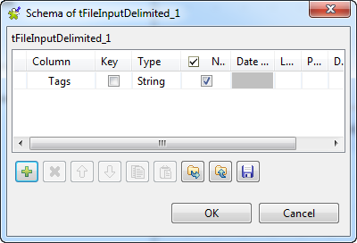
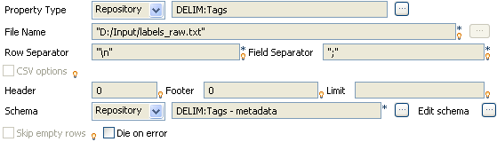
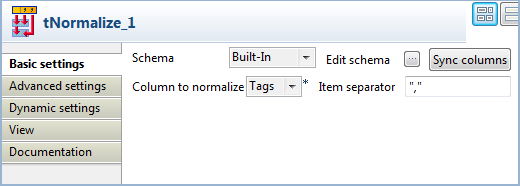
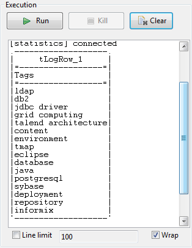

Scenario: Normalizing data
This simple scenario illustrates a job that normalizes a list of tags for Web forum topics and outputs them into a table in the standard output console (Run Job tab).

- Click and drop the following components onto the designing workspace: tFileInputDelimited, tNormalize, tLogRow.
- In the tFileInputDelimited properties, set the input file to be normalized.
- The file schema is stored in the repository for ease of use. It is made of one column, called Tags, containing rows with one or more keywords.
- Set the Row Separator and the Field Separator.
- On the tNormalize Properties panel, define the column the normalization operation is based on.
- In this use case, the column to normalize is Tags.
- The Item separator is the comma, surrounded here by single quotes as the job is done in Perl.
- In the tLogRow component, check the Print values in the cells of table box.
- Save the Job and run it.




The values are normalized and displayed in a table cell on the console.